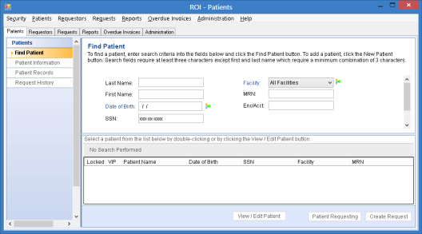
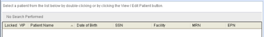

) status. For encounters, the status is passed from the HIS (ADT) system to the OneContent system. For non-OneContent patients, the status is set on the Patient
) status. For encounters, the status is passed from the HIS (ADT) system to the OneContent system. For non-OneContent patients, the status is set on the Patient The Find Patient form enables you to:
To open the form
Select Patients > Find Patient.
Note: Other navigation options on the Patients tab are disabled until you select and open a patient record to view.

Item descriptions
Main content pane
Last Name box
All or part of a patient's last name, beginning with the first letter of the name.
When used for searching:
First Name box
A patient's full or partial first name, beginning with the first letter of the name.
For search purposes:
Date of Birth box
A patient's date of birth.
Must be combined with at least one other search field.
Allows you to enter Month, Day, and Year values.
SSN box
All or part (beginning with the first character) of the patient's Social Security Number.
When used for searching, requires at least three characters, beginning with the first character
Facility box
The facility where patient care occurred.
Enc/Acct box
Used to find patient records that match the encounter or account number you enter.
Accepts all or only some of the patient's encounter or account number, beginning with the first character. Requires at least three characters.
MRN box
Medical Record Number.
Combines with the Facility value to render a unique patient identifier.
Accepts all or part of the MRN, beginning with the first character. Requires at least three characters.
EPN box
Enterprise Person Number. EPN is an identifier created by an Enterprise Master Person Index (EMPI) system to uniquely identify a person across all enterprise systems and facilities.
Displays only for EPN systems. Optionally displays the configured EPN prefix, depending on your election (default setting is no prefix).
Find Patient button
Triggers the search based on the criteria you entered.
Enabled as soon as you have:
OR
OR
New Patient button
Displays the Patient Information form, where you can create a new patient record.
Enabled only if you have ROI Create/Modify Request permissions.
Reset button
Discards unsaved entries, clears all data entry boxes or restores them to their default states, clears any search results, and permits you to start over.
Detail pane

Locked column
Indicates an OneContent patient is locked () or has an encounter that is locked.
Not sortable.
Access rules are:
VIP column
Indicates that an OneContent encounter or a non-OneContent patient has VIP () status. For encounters, the status is passed from the HIS (ADT) system to the OneContent system. For non-OneContent patients, the status is set on the Patient
Information form.
Not sortable.
VIP status restricts access to a patient's records.
Patient Name column
The patient's name.
By default, the grid is sorted by Patient Name in alphanumeric ascending order. Sort is on the first characters displayed, regardless of which name (first or last) occurs first.
Date of Birth column
The patient’s date of birth formatted as MM/DD/YYYY.
Display-only. Initial sort order is date ascending.
SSN column
The patient's Social Security Number.
Display-only. Initial sort order is numeric ascending.
SSN masking rules:
Facility column
The name of the facility visited by the patient. Combines with the MRN value to create a unique patient ID.
Displays only when your system is not EMPI-enabled (that is, EPN is not configured). Initial sort order is alphanumeric ascending.
MRN column
The patient's medical record number. Combines with the Facility value to create a unique patient ID.
Initial sort order is alphanumeric ascending.
EPN column
The patient's EPN (Enterprise Person Number).
Displays only for EPN systems.
Initial sort order is alphanumeric ascending.
View/Edit Patient button
Allows you to view or edit demographic information for the selected patient on the Patient Information form.
Enabled only after you select at least one patient in the grid.
Patient Requesting button
Allows you to create a new request for the selected patient, with the patient as the requestor.
Rules are:
Create Request button
Allows you to create a new request for the selected patient.
Displays only if you have Create Request permissions.
Launches the Request Information form and adds the current patient as a patient on the new request.